ED 502 Policy, Strategy and Leadership in Education
How education policy is made and implemented, how strategy turns policy into action, and how leaders are formed to make it work in Bangladesh
Contents
About this course
Policy, strategy and leadership are three linked levels of educational change. Policy states the intended direction and values of the education system; strategy translates these intentions into prioritised, resourced plans; and leadership mobilises people to carry plans into practice in ministries, directorates, institutions and classrooms. Weakness at any level breaks the chain: a sound policy without strategy remains rhetoric, and a good strategy without leadership remains paper.
ED 502 develops a critical understanding of these concepts and their interrelationships. Unit 1 examines the meaning, ecology, jurisdiction, actors and processes of education policy, especially in Bangladesh. Unit 2 explores strategy, strategic planning and management, school improvement, and strategies for access, equity and quality. Units 3 and 4 cover the theories, styles, skills and development of leaders, including gender differences. Unit 5 applies these ideas to implementing policies, managing self, building teams, motivating people, communicating and managing conflict.
Course objectives
Develop a critical understanding of key concepts of policy, strategy and leadership and their interrelationship.
Analyse the challenges, issues, actors and stakeholders that influence educational policies and strategies.
Explain the policy-making and implementation process in Bangladesh within a global context.
Apply strategic planning and management to educational institutions and the wider system.
Gain a thorough understanding of leadership theories, styles and competencies, including gender perspectives.
Develop and apply leadership skills (team building, motivation, communication, conflict management) for implementing policies and programmes from pre-primary to tertiary, madrasah and TVET.
Contents
01 Unit 1: Introduction to Policies in Education
02 Unit 2: Strategies in Education
03 Unit 3: Key Aspects of Leadership
04 Unit 4: Making of Educational Leaders
05 Unit 5: Policy, Strategy and the Roles of Leaders in Education in Bangladesh
06 Exam Preparation Bank
07 References
Each unit follows the official M.Ed syllabus order. Read the narrative first, then the boxes, then test yourself with the Exam focus questions.
Teal boxes = definitions and study tips. Golden boxes = must-remember ideas and exam focus. Green boxes = Bangladesh context. Ash boxes = critical perspectives expected at Master's level. Amber Verify before use boxes mark policy facts and statistics that change: check them against the latest BANBEIS, MoE, DPE, NCTB, UGC, UNESCO or World Bank sources before an exam.
The final chapter is a question bank (MCQs with answers, short and broad questions) in the style of university examinations, followed by full references in APA 7th style.
Unit 1: Introduction to Policies in Education
1.1 Meaning and definitions of policy
The word policy derives from the Greek polis (city-state) and Latin politia (state, administration). In everyday administrative usage, a policy is a statement of intent that guides decisions and actions towards stated goals.
Public policy (Dye, 1972): "Whatever governments choose to do or not to do." Dye's definition reminds us that inaction (for example, not regulating private coaching) is also policy.
Policy (Easton, 1953): "The authoritative allocation of values" for a society. Education policy decides whose values (equity, efficiency, excellence, religious or secular identity, national language) shape schooling.
Policy as text and as discourse (Ball, 1993): Policy is both text (documents that are encoded by authors and decoded, often differently, by readers such as teachers) and discourse (frameworks of meaning that set limits on what can be thought and said, for example "quality", "accountability" or "skills").
Education policy (Bell & Stevenson, 2006): Education policy is "about the power to determine what gets done, or not done" in education; it is "the operational statement of values" that emerges from contestation between different groups.
Characteristics of a good educational policy
Goal-oriented and grounded in national values and the Constitution.
Evidence-informed and contextually feasible.
Coherent with other sectoral policies (finance, labour, ICT, gender, disability).
Flexible and periodically reviewed.
Inclusive and equitable; developed with stakeholder participation.
Clear on responsibilities, resources and timelines.
Accompanied by a legal framework and a monitoring mechanism.
Types of policy
| Basis | Types | Educational example |
|---|---|---|
| Lowi's (1964) policy arenas | Distributive, redistributive, regulatory, constitutive | Free textbooks (distributive); stipends for poor girls (redistributive); rules on coaching centres (regulatory); creating a new university commission (constitutive) |
| Substance | Substantive versus procedural | Curriculum content versus rules for teacher recruitment |
| Level | Macro (national), meso (directorate, board, district), micro (institution) | NEP 2010; DSHE circular; school admission policy |
| Effect | Material versus symbolic | Budget for school feeding versus declaring a "year of quality" |
| Formality | Explicit (written) versus implicit (practice, tradition) | Written assessment guidelines versus informal promotion practices |
Table 1. Classifications of public and educational policy
1.2 Relation between policy and decisions
A decision is a choice among alternatives at a particular moment; a policy is a standing guide that frames many decisions. Simon (1947) described organisations as decision-making systems in which policies set the value premises within which officials decide.
| Policy | Decision |
|---|---|
| Broad, general guideline | Specific choice |
| Long-term and continuing | Often one-off or short-term |
| Framed at higher levels | Made at all levels |
| Sets premises and limits for action | Applies the policy to a case |
| Example: "All primary-age children shall attend school free of charge" | Example: "Admit this child without a birth certificate under the policy" |
Table 2. Policy versus decision
Policies are implemented through thousands of decisions by officials, head teachers and teachers. This is why Lipsky (1980) called front-line public servants "street-level bureaucrats": their discretionary decisions effectively become policy in practice.
1.3 Ecology of educational policy
The ecology of policy refers to the environment of forces within which policy is formed and lived out. Bell and Stevenson (2006) offer a widely used model linking the wider environment to everyday practice.

Figure 1. Bell and Stevenson's (2006) model of the policy process
Ecological factors that shape education policy in Bangladesh include:
| Factor | Illustration in Bangladesh |
|---|---|
| Historical | Colonial legacy of examinations and multiple streams; Liberation War ideals reflected in the 1972 Constitution |
| Political | Party manifestos, regime change and policy reversals (e.g., curriculum changes after 2024) |
| Economic | LDC graduation (scheduled for 2026), demand for skilled labour, limited fiscal space |
| Socio-cultural | Religion and madrasah education, language (Bangla, English, indigenous languages), gender norms |
| Demographic | Large youth population, urbanisation, migration |
| Global | SDG 4, donor programmes, rankings, labour-market globalisation |
| Technological | Digital Bangladesh / Smart Bangladesh agendas, online learning after COVID-19 |
| Environmental | Climate vulnerability, disaster-resilient schools, Delta Plan 2100 |
Table 3. Ecological factors in education policy
Check the status of Bangladesh's LDC graduation timeline (scheduled for November 2026 at the time of writing) and the names of current national digital agendas.
1.4 Jurisdiction of policy-making in education
Jurisdiction refers to who has legal authority to make which policy. In a unitary state such as Bangladesh, education policy authority is concentrated at the national level.
| Level / body | Jurisdiction |
|---|---|
| Constitution | Sets fundamental principles (Articles 15, 17, 28) that all policy must respect |
| Parliament (Jatiya Sangsad) | Enacts laws (e.g., CPEA 1990, Private University Act 2010, Accreditation Council Act 2017); approves budgets; parliamentary standing committees on education review ministries |
| Cabinet | Approves national policies (e.g., NEP 2010) |
| Ministry of Education (MoE): Secondary and Higher Education Division; Technical and Madrasah Education Division | Secondary, higher secondary, higher, technical, vocational and madrasah education policy |
| Ministry of Primary and Mass Education (MoPME) | Pre-primary, primary and non-formal education |
| Other ministries | Labour (skills), Women and Children Affairs (ECD), Social Welfare (disability), ICT Division, Religious Affairs (Islamic Foundation, maktab education) |
| Statutory bodies | UGC (higher education), NCTB (curriculum and textbooks), education boards (examinations), BANBEIS (statistics), NAEM (management training), Bangladesh Accreditation Council, BTEB (technical education), NTRCA (non-government teacher registration and recommendation) |
| Field level | Directorates (DPE, DSHE, DTE, DME), district and upazila offices: implement and adapt within national policy |
| Institutions | Governing bodies, school managing committees, academic councils: institutional policies within national rules |
| Judiciary | High Court rulings shape policy (e.g., directives on corporal punishment in 2011) |
Table 4. Jurisdiction of education policy-making in Bangladesh
Ministry structures and division names change; confirm the current organogram of MoE and MoPME. The High Court Division's 2011 judgment declaring corporal punishment unconstitutional is frequently cited; confirm the case reference before quoting.
1.5 Factors, actors and stakeholders in policy-making
Factors are impersonal forces (economy, ideology, evidence, crises). Actors are individuals and organisations who participate in policy-making. Stakeholders are all those who affect or are affected by a policy.
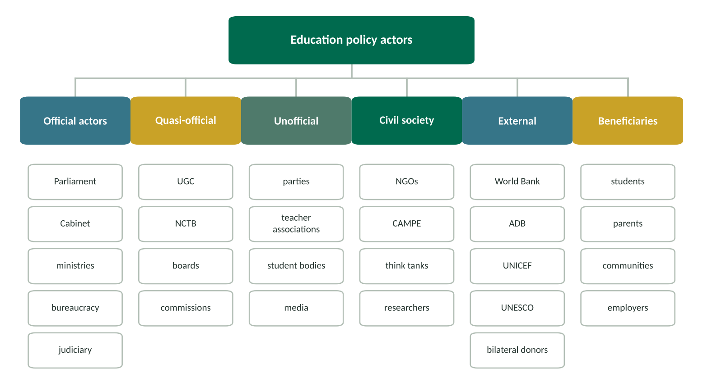
Figure 2. Actors and stakeholders in education policy
| Quadrant | Stakeholders (examples) | Strategy |
|---|---|---|
| High power, high interest | Ministry, Cabinet, Finance Division, major donors | Manage closely; involve in design |
| High power, low interest | Finance and Planning ministries for some issues, judiciary | Keep satisfied |
| Low power, high interest | Teachers, parents, students, NGOs | Keep informed; build their voice |
| Low power, low interest | General public on technical issues | Monitor; communicate simply |
Table 5. Stakeholder analysis (power-interest grid, after Mendelow, 1991)
1.6 The policy-making process
The policy cycle (stages heuristic)
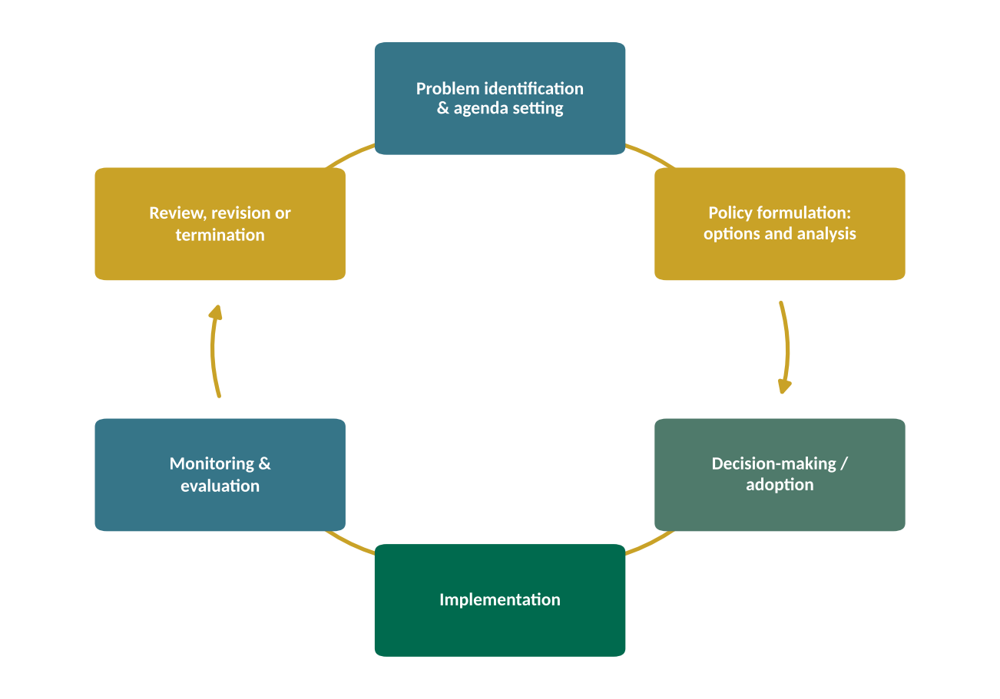
Figure 3. The policy cycle (after Lasswell, 1956; Howlett et al., 2009)
| Model | Key thinkers | Core idea | Use in education |
|---|---|---|---|
| Rational-comprehensive | Simon (bounded); classical planning | Define goals, list all alternatives, evaluate costs and benefits, choose the best | Commission reports often aspire to this |
| Incremental ("muddling through") | Lindblom (1959) | Policy changes in small steps from existing practice; bargaining | Annual budgets grow incrementally |
| Mixed scanning | Etzioni (1967) | Broad scan for fundamental choices, detailed incremental analysis for others | Five-Year Plans plus annual programmes |
| Garbage can | Cohen, March & Olsen (1972) | Problems, solutions, participants and choice opportunities mix in "organised anarchies" | Universities; ad hoc reforms |
| Multiple streams | Kingdon (1984) | Policy change occurs when problem, policy and political streams couple in a "policy window" | COVID-19 opened a window for digital education policy |
| Elite / group | Mills; Truman | Policy reflects elite preferences or group pressure | Teacher associations' pressure on MPO and nationalisation |
| Ball's policy cycle | Bowe, Ball & Gold (1992) | Three contexts: influence, text production, practice; policy is re-created in practice | Explains gaps between curriculum documents and classrooms |
Table 6. Models of policy-making
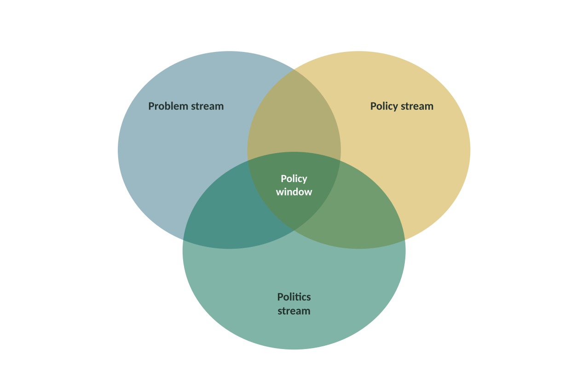
Figure 4. Kingdon's multiple streams: a policy window opens when three streams meet
1.7 Development of educational policy-making and implementation in Bangladesh
The usual sequence for a major education policy in Bangladesh is:
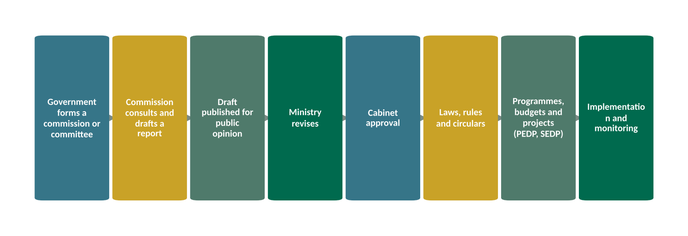
Figure 5. Typical education policy process in Bangladesh
| Commitment | Status (indicative) |
|---|---|
| One-year pre-primary education | Introduced in government primary schools from 2010 onward; expansion to two years for age 4+ planned |
| Extension of primary education to Grade 8 | Not implemented system-wide; piloted in a limited number of schools |
| Single common curriculum to Grade 10 | Attempted through NCF 2021 (removing streams in Grades 9 and 10) and reversed in 2025 |
| Permanent Education Commission | Not established |
| Education Act | Draft not yet enacted |
| Free textbooks | Implemented: free textbooks distributed nationwide each January since 2010 |
| Creative (structured) questions | Implemented 2008 to 2010 onward; widely criticised for guidebook dependence |
| Teacher recruitment through a separate commission | Partially: NTRCA for non-government teachers |
Table 7. Implementation status of selected NEP 2010 commitments (indicative)
Treat the "status" column as indicative and update it from the latest Ministry of Education and NCTB documents and news before using it in an exam; several items have changed since 2023.
Why policies fail in implementation
Fullan (2016) argues that change fails when it is overloaded, fragmented, under-resourced and poorly understood by implementers. In Bangladesh the common causes of the policy-practice gap are: frequent policy reversals; centralised top-down design with limited teacher involvement; inadequate training and resources; examination-driven incentives (coaching, guidebooks); weak monitoring; political interference; and insufficient financing.
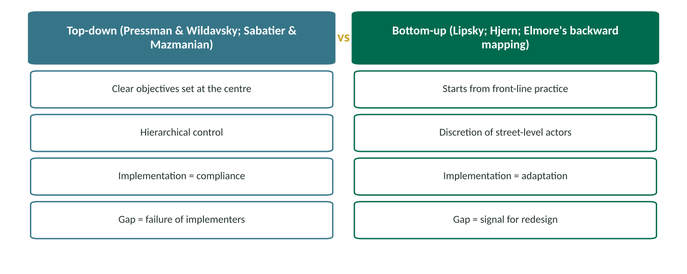
Figure 6. Top-down and bottom-up implementation perspectives
1.8 Globalisation and the educational policy context
Rizvi and Lingard (2010) argue that education policy is now made in a global context: national governments still decide, but the "social imaginary" of neoliberal globalisation, international organisations (OECD, World Bank) and policy networks shape what counts as a problem and a solution.
Convergence of policy discourse around human capital, skills, quality and accountability.
Policy borrowing and lending (see ED 501), including donor conditionality.
Datafication: global indicators (SDG 4) and comparative assessments drive policy priorities.
Marketisation: growth of private higher education and private tutoring.
Vernacularisation: global ideas are reinterpreted locally (Appadurai's "vernacular globalisation").
A critical policy analysis asks: Whose problem? Whose solution? Who benefits? Who is silenced? For example, a competency-based curriculum may be framed globally as modernisation but experienced locally as a burden on under-resourced rural schools. Policy sociology (Ball, Whitty) encourages students of policy to examine power, discourse and inequality, not only efficiency.
Likely questions: "Define policy. Distinguish policy from decision." "Explain the ecology of educational policy with reference to Bell and Stevenson's model." "Who are the actors in education policy-making in Bangladesh? Analyse their roles." "Describe the policy cycle and critically discuss the incremental and multiple-streams models." "Why do education policies fail in implementation in Bangladesh?"
Unit 2: Strategies in Education
2.1 Meaning and definitions of strategy
The term strategy comes from the Greek strategos (general, the art of the general). It entered management through business and military thinking.
Strategy (Chandler, 1962): "The determination of the basic long-term goals and objectives of an enterprise, and the adoption of courses of action and the allocation of resources necessary for carrying out these goals."
Strategy (Johnson, Scholes & Whittington, 2008): "The direction and scope of an organisation over the long term, which achieves advantage in a changing environment through its configuration of resources and competences with the aim of fulfilling stakeholder expectations."
Mintzberg (1987) proposed five Ps of strategy: strategy as plan (intended course of action), ploy (manoeuvre to outwit), pattern (consistency in behaviour over time, the "emergent" strategy), position (place in the environment), and perspective (an organisation's ingrained way of seeing the world).

Figure 7. Deliberate and emergent strategy (Mintzberg & Waters, 1985)
2.2 Organisation, policy, strategy and tactics: interrelationships
| Concept | Meaning | Time frame | Example in a secondary school |
|---|---|---|---|
| Organisation | A structured social unit pursuing collective goals | Continuing | The school, its staff, governing body and students |
| Policy | Broad guide expressing values and intentions | Long-term | "Every learner will achieve grade-level literacy" |
| Strategy | Overall plan to achieve policy goals with resources | Medium to long-term (3 to 5 years) | A school literacy improvement strategy with remedial classes and teacher training |
| Tactics | Specific, short-term actions to implement strategy | Short-term | Daily 20-minute reading period; peer reading pairs; weekly checks |
Table 8. Relationship among organisation, policy, strategy and tactics
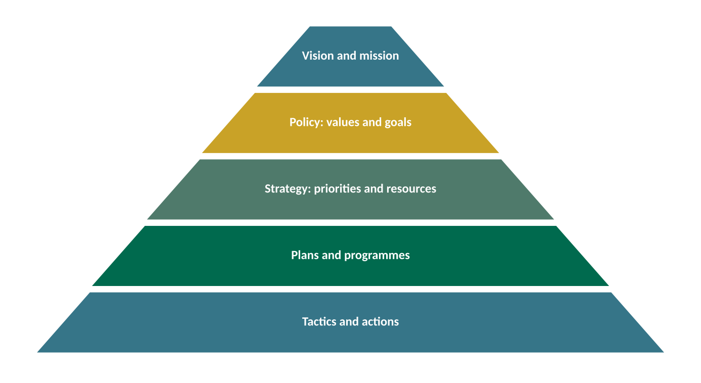
Figure 8. Hierarchy from vision to tactics
2.3 Strategic planning and strategic management
Strategic planning is a disciplined effort to produce fundamental decisions and actions that shape what an organisation is, what it does and why (Bryson, 2018). Strategic management is broader: it includes strategic analysis, choice, implementation and continuous review, making strategy a living process rather than a document.
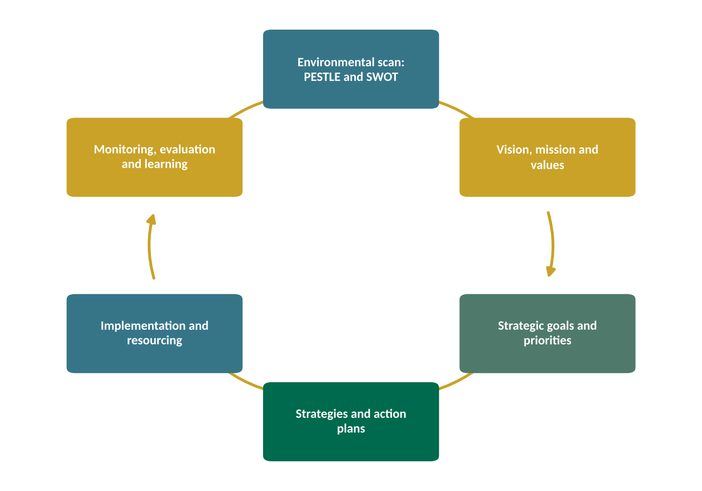
Figure 9. The strategic planning and management cycle
Tools of strategic analysis
| Tool | Purpose | Educational application |
|---|---|---|
| SWOT | Internal Strengths and Weaknesses; external Opportunities and Threats | School self-assessment before a School Improvement Plan |
| PESTLE | Political, Economic, Social, Technological, Legal and Environmental scan | National-level sector analysis |
| Stakeholder analysis | Interests and influence of stakeholders | Planning curriculum reform consultations |
| Gap analysis | Current state versus desired state | Learning outcome gap against curriculum standards |
| Logical framework (logframe) | Goal, purpose, outputs, activities with indicators, means of verification and assumptions | Donor-funded projects such as PEDP components |
| Balanced scorecard | Financial, customer, internal process, learning and growth perspectives (Kaplan & Norton, 1992) | University strategic plans |
| Theory of change | Causal pathway from activities to impact | Programme design for teacher training |
Table 9. Common strategic analysis tools
Strategic thinking in schools (Davies, 2011)
Brent Davies argues that strategically focused schools combine strategic intent (a few clear long-term aims), strategic conversations (building shared understanding), strategic architecture (structures and processes), and strategic timing and abandonment (knowing when to act and what to stop doing). He warns against confusing operational plans with strategy.
2.4 Strategic planning in education and School Improvement Programmes
School improvement is "a systematic, sustained effort aimed at change in learning conditions and other related internal conditions in one or more schools, with the ultimate aim of accomplishing educational goals more effectively" (van Velzen et al., 1985). Hopkins (2001) emphasises focusing on learning, building capacity and making improvement a continuing process.

Figure 10. Steps in preparing a School Improvement Plan
Under PEDP II, PEDP3 and PEDP4, every government primary school prepares a School Level Improvement Plan (SLIP), supported by a SLIP grant, involving the School Managing Committee (SMC), teachers and community. Upazila Primary Education Plans (UPEP) aggregate school priorities. At secondary level, projects have funded school improvement and performance-based grants. Studies report that SLIP increased community participation but that funds were often used for physical items rather than learning priorities.
Confirm current SLIP grant amounts and modalities under the latest primary education programme.
Sample action plan format
| Goal | Activity | Responsible | Timeline | Resources | Indicator | Means of verification |
|---|---|---|---|---|---|---|
| Improve Grade 3 reading fluency | Daily 20-minute guided reading | Class teacher, head teacher | Jan to Jun | Graded readers | 80% read 45 words per minute | Fluency test records |
| Reduce absenteeism | Home visits and SMS to parents | Assistant teachers, SMC | Monthly | Mobile phones | Attendance above 90% | Attendance register |
| Increase girls' science participation | Science club with female role models | Science teacher | Term 1 | Club kit | 50% club members girls | Club register |
Table 10. School action plan template (illustrative)
2.5 Strategies to expand and improve the education system
| Dimension | Meaning / indicator | Strategies | Bangladesh examples |
|---|---|---|---|
| Access | Opportunity to enrol (gross intake, GER) | School construction, removing fees, transport, flexible schooling | New government primary schools, nationalisation of 26,000 non-government primary schools (2013) |
| Participation | Regular attendance (NER, attendance rate) | School feeding, stipends, community mobilisation | Primary stipend (via mobile financial services), school feeding programmes |
| Completion (year and cycle) | Survival to final grade; completion rate | Remedial support, early warning of dropout, second-chance education | Reaching Out-of-School Children (ROSC); BRAC schools |
| Promotion | Moving to next grade (promotion, repetition rates) | Continuous assessment, remedial teaching, reduced repetition | Automatic promotion debates; remedial classes |
| Transition | Movement between levels (primary to secondary) | Stipends at secondary, school proximity, information | Secondary stipends (FSSAP, SESIP, HSP) |
| Inclusion | Participation of children with disabilities, ethnic minorities, the poor | Inclusive policies, assistive devices, mother-tongue materials | Disability-inclusive programmes; textbooks in five indigenous languages |
| Gender | Parity and equality | Stipends for girls, female teachers, safe toilets, anti-harassment | Gender parity achieved in enrolment; 60% female teacher recruitment quota in primary |
| Diversity | Respecting cultural, linguistic and religious diversity | Multilingual education, culturally responsive curriculum | Mother-tongue based multilingual education pilot |
| Quality | Learning outcomes, relevance | Teacher development, curriculum reform, assessment for learning, instructional leadership | Diploma in Primary Education (DPEd), subject-based training, NSA |
Table 11. Strategies for system expansion and improvement
Check the number of indigenous-language textbooks, current stipend amounts and coverage, and the female teacher quota before quoting.
Indicators commonly used
Gross Enrolment Ratio (GER) = (Enrolment at a level, regardless of age ÷ Population of official age for that level) × 100
Net Enrolment Ratio (NER) = (Enrolment of official-age children ÷ Population of official age) × 100
Survival rate to Grade 5 = (Pupils reaching Grade 5 ÷ Pupils who entered Grade 1 in the cohort) × 100
2.6 Strengths and weaknesses of different strategies
| Strategy | Strengths | Weaknesses / risks |
|---|---|---|
| Supply-side expansion (schools, teachers) | Addresses physical access | Expensive; quality may lag behind expansion |
| Demand-side incentives (stipends, CCTs, feeding) | Raise enrolment and attendance among the poor; girls' gains | Leakage, targeting errors; little effect on learning by themselves |
| Decentralisation and school-based management | Local ownership, responsiveness | Elite capture, unequal capacity |
| Accountability and testing | Information on outcomes; focus | Teaching to the test, coaching, narrowed curriculum |
| Teacher professional development | Directly targets instruction | Often one-off and not followed up; transfer to practice weak |
| Public-private partnership | Expands provision quickly | Equity and regulation concerns |
| Technology-based strategies | Scale, flexibility | Digital divide; needs pedagogy and maintenance |
Table 12. Strengths and weaknesses of selected strategies
Evidence (e.g., Glewwe & Muralidharan, 2016; Global Education Evidence Advisory Panel, 2020, 2023) suggests that the most cost-effective strategies for learning include teaching at the right level, structured pedagogy (teacher guides plus materials plus coaching), giving information on the returns to education, and reducing travel time to school. Demand-side incentives mainly improve access.
Expect: "Define strategy. How is it related to policy and tactics?" "Explain the steps of strategic planning with reference to an educational institution." "Prepare a strategic plan and action plan for a secondary school." "Critically evaluate strategies used in Bangladesh to improve access, gender equality and quality."
Unit 3: Key Aspects of Leadership
3.1 Meaning and definitions of leadership
Leadership (Northouse, 2021): "A process whereby an individual influences a group of individuals to achieve a common goal." Four components: leadership is a process; involves influence; occurs in groups; and involves common goals.
Leadership (Stogdill, 1950): "The process of influencing the activities of an organized group toward goal setting and goal achievement."
Educational leadership (Bush, 2020): Leadership is "a process of influence leading to the achievement of desired purposes", grounded in personal and professional values and articulated as a clear vision for the school.
Different ideas about leadership treat it as a trait (born leaders), a behaviour (what leaders do), a relationship (between leaders and followers), a process of influence, a position (formal authority) or a distributed property of an organisation (shared across many people).
Leadership and management
| Management | Leadership |
|---|---|
| Planning and budgeting | Establishing direction (vision) |
| Organising and staffing | Aligning people |
| Controlling and problem-solving | Motivating and inspiring |
| Produces order and consistency | Produces change and movement |
| "Doing things right" | "Doing the right things" |
Table 13. Leadership compared with management (Kotter, 1990; Bennis & Nanus, 1985)
Bush (2020) argues that effective educational institutions need both: leadership without management lacks implementation; management without leadership lacks direction. Cuban (1988) linked leadership to change and management to maintenance.
3.2 Nature and importance of leadership
Nature: leadership is relational, contextual, value-laden, purposeful and both formal and informal; it can be exercised by anyone, not only by the principal.
Importance in education: Leithwood et al. (2008) concluded that "school leadership is second only to classroom teaching as an influence on pupil learning". Robinson, Hohepa and Lloyd (2009) found that promoting and participating in teacher learning and development has the largest effect of the leadership dimensions they studied (effect size about 0.84), followed by planning, coordinating and evaluating teaching and the curriculum.
| Dimension | Approximate effect size |
|---|---|
| Establishing goals and expectations | 0.42 |
| Strategic resourcing | 0.31 |
| Planning, coordinating and evaluating teaching and the curriculum | 0.42 |
| Promoting and participating in teacher learning and development | 0.84 |
| Ensuring an orderly and supportive environment | 0.27 |
Table 14. Five dimensions of student-centred leadership (Robinson et al., 2009)

Figure 11. Effect sizes of leadership dimensions on student outcomes (Robinson et al., 2009)
3.3 Theories of leadership
Trait theories
Early "great man" theories assumed leaders are born. Stogdill's reviews (1948, 1974) found traits associated with leadership (intelligence, self-confidence, determination, integrity, sociability) but showed that traits alone do not predict leadership across situations. Later research linked the Big Five personality factors to leadership emergence and effectiveness: extraversion strongest, followed by conscientiousness and openness (Judge et al., 2002).
Skills approach
Katz (1955) identified three skills whose importance varies with the level of management:

Figure 12. Katz's (1955) three-skill approach
Mumford et al. (2000) proposed a skills model with competencies (problem-solving, social judgement, knowledge), individual attributes and career experiences.
Behavioural theories
Ohio State studies: two dimensions, initiating structure (task) and consideration (relationship).
University of Michigan studies: production orientation versus employee orientation.
Blake and Mouton's Managerial (Leadership) Grid (1964): concern for production versus concern for people produces five styles: impoverished (1,1), country club (1,9), authority-compliance (9,1), middle-of-the-road (5,5) and team management (9,9).

Figure 13. Blake and Mouton's Managerial Grid (simplified)
Lewin, Lippitt and White (1939): autocratic, democratic and laissez-faire styles; democratic leadership produced better morale and originality.
Contingency and situational theories
Fiedler's contingency theory (1967): effectiveness depends on the match between leader style (measured by the Least Preferred Co-worker scale: task- or relationship-motivated) and situational favourableness (leader-member relations, task structure, position power).
Hersey and Blanchard's Situational Leadership: leaders adapt directive and supportive behaviour to followers' development level.

Figure 14. Hersey and Blanchard's situational leadership styles
Path-goal theory (House, 1971): the leader clarifies the path to goals and removes obstacles, choosing directive, supportive, participative or achievement-oriented behaviour depending on followers and tasks.
Leader-member exchange (LMX) theory: quality of dyadic relationships (in-group and out-group) affects outcomes.
Transformational and transactional leadership
Burns (1978) distinguished transactional leadership (exchange of rewards for performance) from transforming leadership (raising followers to higher levels of motivation and morality). Bass (1985) developed the Full Range Leadership Model with the "Four Is" of transformational leadership:
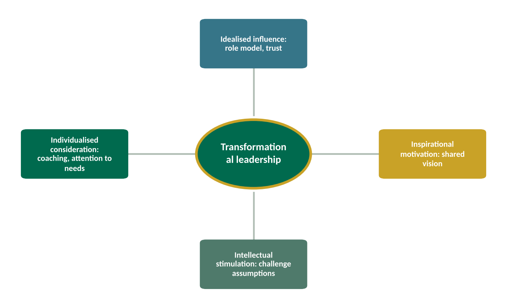
Figure 15. Bass's Four Is of transformational leadership
Leithwood and Jantzi adapted transformational leadership to schools: setting directions, developing people, redesigning the organisation, and managing the instructional programme.
Leadership models specific to education
| Model | Key authors | Main idea |
|---|---|---|
| Instructional leadership | Hallinger & Murphy (1985) | The principal focuses on teaching and learning: defining the school mission, managing the instructional programme, promoting a positive learning climate |
| Leadership for learning | MacBeath & Dempster (2009); Townsend & MacBeath (2011) | Five principles: focus on learning, conditions for learning, dialogue, shared leadership, shared accountability |
| Distributed leadership | Spillane (2006); Gronn (2002); Harris (2008) | Leadership is stretched across leaders, followers and situations; practice emerges from interactions |
| Teacher leadership | York-Barr & Duke (2004) | Teachers lead beyond the classroom: mentoring, curriculum, professional communities |
| Moral leadership | Sergiovanni (1992) | Leadership based on values, purposes and moral authority rather than bureaucratic authority |
| Servant leadership | Greenleaf (1970) | The leader is servant first; focuses on growth of others |
| Authentic leadership | Avolio & Gardner (2005) | Self-awareness, relational transparency, balanced processing, internalised moral perspective |
| System leadership | Fullan; Hopkins | Leaders work beyond their own school to improve the wider system |
| Contingent / adaptive leadership | Heifetz (1994) | Distinguish technical problems from adaptive challenges requiring changes in values and beliefs |
Table 15. Educational leadership models
Salahuddin's research on Bangladeshi secondary schools (2011, 2016) found leadership traditionally positional and hierarchical, with head teachers constrained by governing bodies, political pressure and bureaucratic rules, but also identified principals who built distributed and collaborative practices to drive change. These studies are recommended in the syllabus and are useful local evidence.
3.4 Leadership styles in education
| Style | Description | When useful | Risk |
|---|---|---|---|
| Autocratic / directive | Leader decides and directs | Crisis (e.g., flood, safety), new staff | Low morale, dependency |
| Democratic / participative | Decisions with staff participation | Curriculum planning, SIP | Slow decisions |
| Laissez-faire | Minimal intervention | Highly expert, self-motivated teams | Drift, lack of direction |
| Transactional | Rewards and sanctions for performance | Routine compliance | Limited innovation |
| Transformational | Vision, inspiration, development | Reform and change | Can become charismatic dependency |
| Instructional | Focus on teaching and learning | Improving learning outcomes | Neglect of administration if overdone |
| Distributed | Leadership shared among many | Complex, larger institutions | Ambiguity of responsibility |
| Servant | Serving and growing others | Building culture | May be seen as weak |
Table 16. Leadership styles and their use in educational settings
Goleman (2000) identified six emotional-intelligence-based styles: coercive, authoritative (visionary), affiliative, democratic, pacesetting and coaching, and found the most effective leaders switch flexibly among them.
3.5 Skills of leadership and qualities of leaders
| Skills | Qualities |
|---|---|
| Visioning and strategic thinking | Integrity and honesty |
| Communication and active listening | Empathy and emotional intelligence |
| Decision-making and problem-solving | Self-confidence with humility |
| Team building and delegation | Fairness and inclusiveness |
| Instructional knowledge and supervision | Resilience and persistence |
| Conflict management and negotiation | Accountability and responsibility |
| Data use and evaluation | Openness to learning and change |
| Resource and financial management | Commitment to students |
Table 17. Core leadership skills and qualities
3.6 Gender differences in leadership styles
Research on gender and leadership examines whether women and men lead differently and why women are under-represented in senior positions.
Eagly and Johnson (1990) meta-analysis: women tended to adopt a more democratic, participative style and men a more autocratic, directive style; differences in task versus interpersonal orientation were small in organisational settings.
Eagly, Johannesen-Schmidt and van Engen (2003): women were somewhat more transformational and used more contingent reward, both associated with effectiveness.
Role congruity theory (Eagly & Karau, 2002): prejudice arises because leadership roles are stereotyped as masculine, so women leaders are evaluated less favourably.
Glass ceiling and the labyrinth metaphor (Eagly & Carli, 2007): women face multiple barriers (family responsibilities, networks, stereotypes) rather than one barrier at the top; the glass cliff (Ryan & Haslam, 2005) describes women appointed to precarious leadership roles.
In Bangladesh, women form a majority of government primary teachers because of the female recruitment quota, yet they are under-represented as head teachers, education officers, principals of colleges and university vice-chancellors. Barriers include social norms on mobility, family responsibilities, transfer postings, sexual harassment and male-dominated networks. Affirmative action, mentoring, flexible postings and leadership training (e.g., through NAEM) are strategies to address the gap.
Avoid essentialism: the variation within each gender is larger than the difference between genders, and leadership style depends heavily on context, culture and organisational expectations. Intersectionality (gender with class, ethnicity, disability, location) matters.
Expect: "Define leadership. Differentiate leadership from management." "Explain trait, behavioural and situational theories of leadership." "What is transformational leadership? Discuss its relevance for school heads in Bangladesh." "Compare instructional and distributed leadership." "Are there gender differences in leadership styles? Discuss with research evidence."
Unit 4: Making of Educational Leaders
4.1 Are leaders born or made?
Contemporary research suggests leadership is partly dispositional but largely developed through experience, learning and reflection. Gronn (1999) describes the making of educational leaders as a career in four phases: formation (early socialisation in family, school and community that shapes values and self-belief), accession (preparation and candidacy for leadership), incumbency (holding office and learning on the job), and divestiture (letting go of leadership).
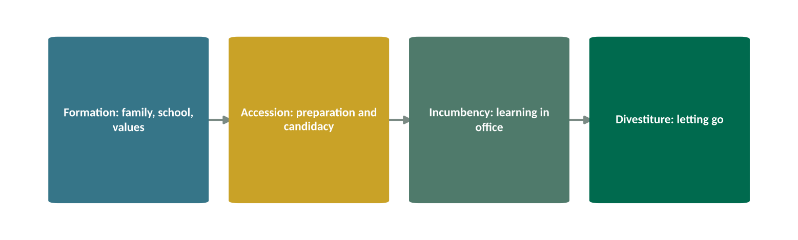
Figure 16. Gronn's (1999) career model of leader development
4.2 Personality traits of an inclusive and effective leader
Effective leaders typically show high conscientiousness, emotional stability, openness, extraversion appropriate to context, and strong emotional intelligence (EI).
| Component | Definition | Hallmarks |
|---|---|---|
| Self-awareness | Recognising one's emotions, strengths and limits | Self-confidence, realistic self-assessment |
| Self-regulation | Controlling impulses and moods | Trustworthiness, comfort with ambiguity |
| Motivation | Passion for work beyond money or status | Optimism, commitment |
| Empathy | Understanding others' emotions | Cross-cultural sensitivity, service |
| Social skill | Managing relationships and building networks | Persuasiveness, team leadership |
Table 18. Goleman's (1998) components of emotional intelligence
Inclusive leaders create environments where all members feel valued and able to contribute. Bourke and Dillon (2016) identified six signature traits: commitment (to diversity as a value), courage (to challenge the status quo), cognisance of bias, curiosity, cultural intelligence and collaboration. In schools, inclusive leadership also means leadership for inclusion: building cultures, policies and practices that welcome learners with disabilities, ethnic minorities and other marginalised groups (Ainscow & Sandill, 2010).
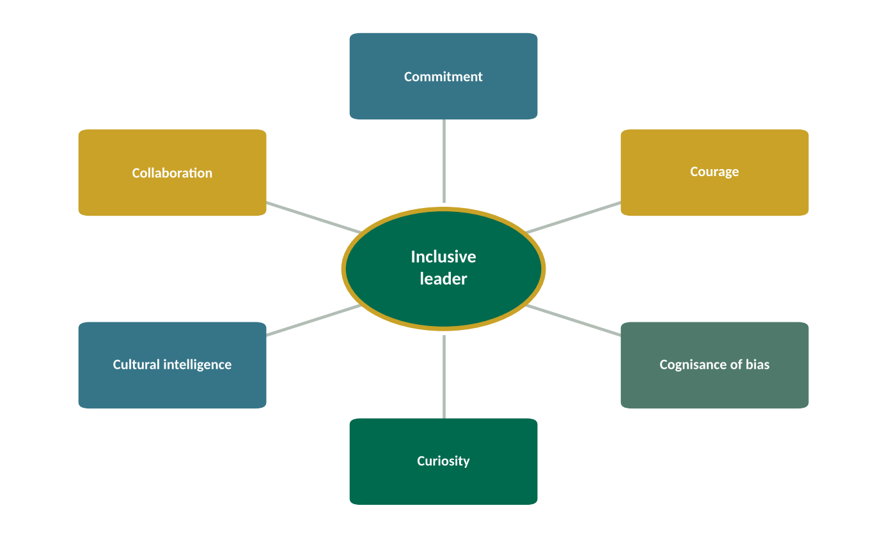
Figure 17. Six signature traits of inclusive leaders (Bourke & Dillon, 2016)
4.3 Skill development in leadership
Leadership skills can be developed through structured learning combined with practice. The widely cited 70:20:10 model (McCall, Lombardo & Eichinger) suggests that roughly 70% of leadership learning comes from challenging experience, 20% from relationships (mentoring, coaching, feedback) and 10% from formal training. The ratio is heuristic, not empirical law, but it emphasises job-embedded learning.

Figure 18. Sources of leadership learning (70:20:10 heuristic)
4.4 Leadership development through motives, self-awareness, self-discipline, education and experience
Motives
McClelland's acquired needs theory identifies the need for achievement (nAch), affiliation (nAff) and power (nPow). Effective managers often have high need for socialised power (power used for collective goals) and moderate affiliation needs (McClelland & Burnham, 1976).
Self-awareness
The Johari Window (Luft & Ingham, 1955) is a classic tool for self-awareness through feedback and self-disclosure.

Figure 19. The Johari Window
Leaders grow by enlarging the open area through seeking feedback (reducing blind spots) and appropriate self-disclosure (reducing the hidden area). 360-degree feedback, reflective journals and personality inventories (e.g., Big Five, MBTI with caution) also build self-awareness.
Self-discipline
Self-discipline includes time management, emotional self-control, consistency between words and actions, ethical conduct and personal routines for learning. Covey's (1989) Seven Habits (be proactive; begin with the end in mind; put first things first; think win-win; seek first to understand, then to be understood; synergise; sharpen the saw) remain popular frameworks for self-leadership.
Education and training
| System | Provision |
|---|---|
| England | National Professional Qualification for Headship (NPQH) |
| Singapore | Leaders in Education Programme (LEP) at NIE; careful talent identification |
| USA | Principal licensure, master's in educational leadership; ISLLC/PSEL standards |
| Bangladesh | NAEM courses for heads and education officers; head teacher leadership training under PEDP; Diploma/M.Ed in educational administration and leadership (IER, Dhaka; other universities); TTCs and NAPE for primary |
Table 19. Leadership preparation in selected systems
Experience and mentoring
Mentoring is a long-term developmental relationship, while coaching is a structured, goal-focused process. The GROW model (Whitmore, 1992) is a common coaching structure: Goal, Reality, Options, Will (way forward). Mentoring of new head teachers by experienced peers, principal learning circles and job shadowing are effective practices.
4.5 Leadership skill-building exercises
| Exercise | Skill developed | How it works |
|---|---|---|
| In-basket (in-tray) exercise | Prioritisation, decision-making | Participants handle a set of memos, complaints and tasks within a time limit |
| Role play | Communication, conflict handling | Simulate a meeting with an angry parent or a resistant teacher |
| Case study analysis | Diagnosis, problem-solving | Analyse a real school leadership dilemma |
| Fishbowl discussion | Listening, facilitation | Inner circle discusses while outer circle observes and gives feedback |
| Vision-writing workshop | Visioning, communication | Draft and present a school vision and mission |
| Team challenges (e.g., tower-building) | Collaboration, delegation | Teams complete a task with limited resources, then debrief |
| Action learning sets | Reflective problem-solving | Small groups help each member work on a real problem |
| 360-degree feedback | Self-awareness | Feedback from supervisors, peers and subordinates |
Table 20. Leadership skill-building activities for training sessions
Practise an in-basket exercise with classmates: take five items (e.g., a teacher absence, a parent complaint about bullying, a circular from the upazila office due today, a request from the SMC chair, a student injured in the playground). Rank them, decide what to do and justify each decision using the urgent-important matrix and ethical priorities.
Expect: "Are leaders born or made? Discuss with reference to Gronn's model." "Describe the traits of an inclusive leader." "Explain how self-awareness and emotional intelligence contribute to leadership development." "Suggest a leadership development programme for newly appointed head teachers in Bangladesh."
Unit 5: Policy, Strategy and the Roles of Leaders in Education in Bangladesh
5.1 Role of leaders in implementing education policies
National level
National leaders (ministers, secretaries, directors general, heads of NCTB, UGC, boards) translate policy into strategy and programmes, secure financing, coordinate agencies and development partners, communicate policy to the public, and ensure monitoring. They also manage the politics of reform (resistance from interest groups, media debates).
Organisational and institutional level
Head teachers, principals, deans and department heads act as mediators of policy. Spillane, Reiser and Reimer (2002) show that implementers make sense of policy through their existing knowledge, beliefs and contexts; leaders shape this sense-making through discussion, modelling and support.
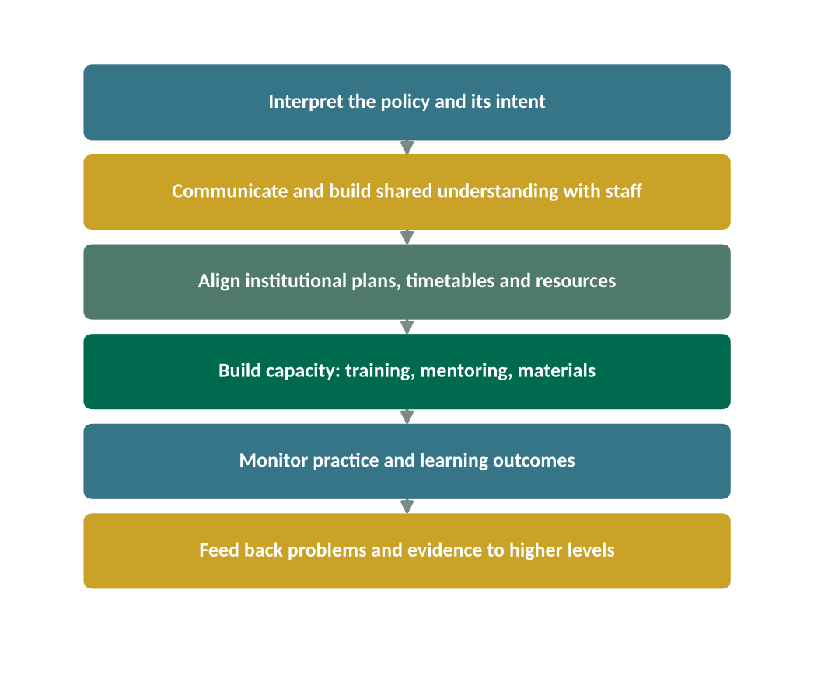
Figure 20. How institutional leaders translate national policy into practice
Fullan's (2016) change knowledge emphasises: focus on a small number of ambitious goals; a guiding coalition; capacity building with a focus on results; learning from implementation (the "implementation dip"); a culture of transparency; and intelligent accountability.
5.2 Leadership and managing self in organisations
Leaders must first lead themselves. Drucker's (1999) "Managing Oneself" asks: What are my strengths? How do I perform? What are my values? Where do I belong? What can I contribute?

Figure 21. Covey's time-management matrix
Key self-management practices: goal-setting and planning (SMART goals), prioritising, delegating, managing stress and well-being, reflective practice (Schön, 1983: reflection-in-action and reflection-on-action), continuous learning, and maintaining ethical integrity under pressure.
5.3 Leadership and team building
Team (Katzenbach & Smith, 1993): "A small number of people with complementary skills who are committed to a common purpose, set of performance goals, and approach for which they hold themselves mutually accountable."
Stages of team development
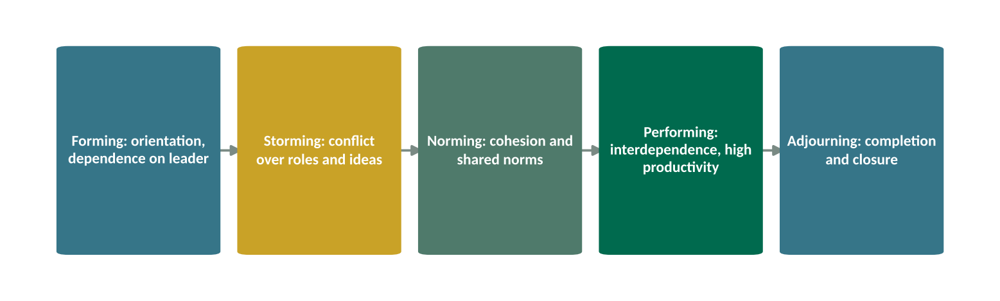
Figure 22. Tuckman's stages of team development (1965; Tuckman & Jensen, 1977)
| Stage | Team behaviour | Leader's role |
|---|---|---|
| Forming | Polite, uncertain, dependent | Clarify purpose, roles, ground rules |
| Storming | Conflict, resistance | Mediate, listen, refocus on goals |
| Norming | Agreement on norms, trust | Facilitate, delegate, build cohesion |
| Performing | Autonomous, productive | Empower, recognise, remove obstacles |
| Adjourning | Task ends | Celebrate, evaluate, capture learning |
Table 21. Leader's role across Tuckman's stages
Team roles
Belbin (1981, 2010) identified nine team roles: Plant, Resource Investigator, Coordinator, Shaper, Monitor Evaluator, Teamworker, Implementer, Completer Finisher and Specialist. Balanced teams contain a mix of action-oriented, people-oriented and thinking-oriented roles.
Purposes of team building in education
Developing shared vision; improving collaboration among teachers (professional learning communities, PLCs); distributing leadership; solving problems collectively; increasing commitment and morale; and improving learning outcomes through coherent teaching.
5.4 Motivation and people management
| Theory | Key idea | Implication for leaders |
|---|---|---|
| Maslow's hierarchy of needs (1943) | Physiological, safety, belonging, esteem, self-actualisation needs | Ensure basic conditions (salary, safety) before expecting high-level engagement |
| Herzberg's two-factor theory (1959) | Hygiene factors (salary, policy, conditions) prevent dissatisfaction; motivators (achievement, recognition, responsibility, growth) produce satisfaction | Recognition and growth opportunities motivate teachers more than pay alone |
| McGregor's Theory X and Theory Y (1960) | X: people dislike work and need control; Y: people seek responsibility and self-direction | Trust-based leadership assumes Theory Y |
| Vroom's expectancy theory (1964) | Motivation = Expectancy × Instrumentality × Valence | Make goals achievable, link performance to valued rewards fairly |
| Adams's equity theory (1963) | People compare input-outcome ratios with others | Fairness in workload, promotion and postings |
| Locke's goal-setting theory (1968) | Specific, challenging goals with feedback raise performance | Set clear targets with feedback |
| Self-determination theory (Deci & Ryan, 1985) | Autonomy, competence and relatedness drive intrinsic motivation | Give professional autonomy, support growth, build collegiality |
Table 22. Major motivation theories and their implications for educational leaders

Figure 23. Maslow's hierarchy of needs
People management in education involves recruitment and induction, workload allocation, performance appraisal (e.g., Annual Confidential Report / Annual Performance Agreement in Bangladesh), professional development, recognition, welfare and grievance handling.
Teacher motivation in Bangladesh is affected by salary scales, MPO status in non-government institutions, promotion bottlenecks, transfer policies, class sizes, non-teaching duties (e.g., census and election duties), and social status. Recognition schemes, career ladders and supportive supervision are low-cost motivators that heads can control.
5.5 Communication and conflict management
Communication
Communication is the process of transmitting meaning from a sender to a receiver through a channel, with feedback. The Shannon-Weaver (1949) model adds noise; later models emphasise communication as a two-way, transactional process.

Figure 24. The communication process
| Barrier | Example | Remedy |
|---|---|---|
| Semantic | Jargon in circulars | Plain language, examples |
| Physical | Noise, distance, poor connectivity | Appropriate channel and timing |
| Psychological | Fear, status difference, distrust | Build trust, open-door policy |
| Organisational | Too many hierarchical layers | Direct channels, team meetings |
| Cultural | Different norms, languages | Cultural sensitivity, translation |
| Information overload | Many simultaneous directives | Prioritise and summarise |
Table 23. Barriers to effective communication and remedies
Leaders' communication skills include active listening, clear and concise messaging, giving constructive feedback, running effective meetings, written communication, public speaking and digital communication.
Conflict management
Conflict is a process that begins when one party perceives that another has negatively affected, or is about to affect, something the first party cares about (Robbins & Judge). Conflict can be functional (improves decisions, innovation) or dysfunctional (damages relationships and performance).
Sources of conflict in educational institutions: scarce resources, role ambiguity, differences in values or goals, communication failures, personality clashes, workload and timetable allocation, promotion, political affiliations, and disputes between management committees and heads.
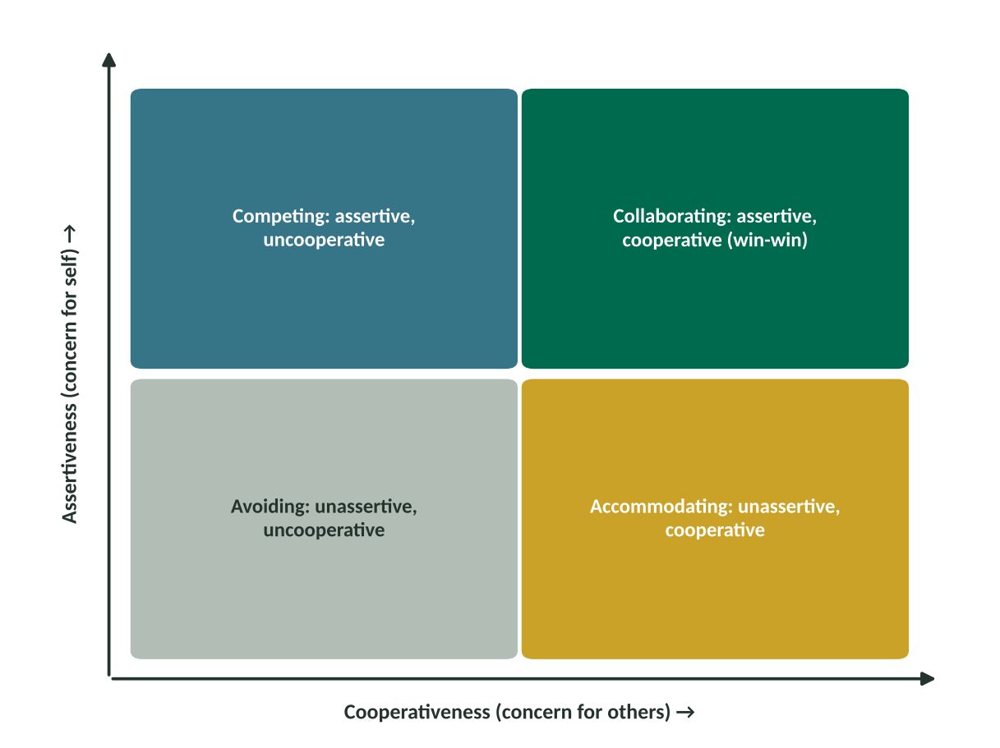
Figure 25. Thomas-Kilmann conflict modes (Thomas & Kilmann, 1974)
Compromising sits in the middle of the grid: partly assertive and partly cooperative.
| Mode | Appropriate when |
|---|---|
| Competing | Quick decisive action is vital (safety); unpopular but necessary rules |
| Collaborating | Both sets of concerns are too important to compromise; building commitment |
| Compromising | Goals are moderately important; temporary settlement needed |
| Avoiding | Issue is trivial; cooling-off needed |
| Accommodating | Relationship matters more; you are wrong |
Table 24. When to use each conflict-handling mode
Practise conflict management with a case: two senior teachers dispute over who gets the Grade 10 science classes. Identify the source of conflict, choose a mode, and role-play an interest-based negotiation (Fisher & Ury's Getting to Yes: separate the people from the problem; focus on interests, not positions; invent options for mutual gain; use objective criteria).
Leadership in Bangladeshi educational institutions operates within strong hierarchies, political influences and bureaucratic accountability. Western models (distributed, transformational) need cultural adaptation: power distance (Hofstede) is high, and change may require working with formal authority while gradually building collaborative cultures.
Expect: "Discuss the role of school leaders in implementing national education policies in Bangladesh." "What is a team? Explain Tuckman's stages of team development and the leader's role in each." "Explain Herzberg's two-factor theory and its implications for teacher motivation in Bangladesh." "Discuss the Thomas-Kilmann conflict modes with examples from educational institutions." "How can a head teacher manage self and time effectively?"
Exam Preparation Bank
A. Multiple-choice questions
1. "Whatever governments choose to do or not to do" is the definition of public policy given by:
(a) Easton (b) Dye (c) Lasswell (d) Ball
Show answer
Answer: (b)
2. Policy as "the authoritative allocation of values" was proposed by:
(a) David Easton (b) Herbert Simon (c) Charles Lindblom (d) Thomas Dye
Show answer
Answer: (a)
3. The idea that policy is both "text" and "discourse" is associated with:
(a) Stephen Ball (b) Michael Fullan (c) Henry Mintzberg (d) Peter Northouse
Show answer
Answer: (a)
4. "Street-level bureaucrats" is a concept developed by:
(a) Lipsky (b) Kingdon (c) Elmore (d) Simon
Show answer
Answer: (a)
5. The incremental model of policy-making ("muddling through") was proposed by:
(a) Etzioni (b) Lindblom (c) Dror (d) Easton
Show answer
Answer: (b)
6. Kingdon's multiple streams framework includes problem, policy and:
(a) economic streams (b) politics streams (c) social streams (d) budget streams
Show answer
Answer: (b)
7. The "garbage can" model was developed by:
(a) Cohen, March and Olsen (b) Bowe, Ball and Gold (c) Pressman and Wildavsky (d) Sabatier and Mazmanian
Show answer
Answer: (a)
8. Backward mapping in implementation research is associated with:
(a) Elmore (b) Lipsky (c) Lowi (d) Dye
Show answer
Answer: (a)
9. Which body is responsible for curriculum and textbooks in Bangladesh?
(a) UGC (b) NCTB (c) BANBEIS (d) NAEM
Show answer
Answer: (b)
10. The "5 Ps" of strategy were proposed by:
(a) Porter (b) Mintzberg (c) Chandler (d) Drucker
Show answer
Answer: (b)
11. "Strategy is the determination of the basic long-term goals of an enterprise..." was defined by:
(a) Chandler (b) Mintzberg (c) Johnson (d) Kotter
Show answer
Answer: (a)
12. In SWOT analysis, "threats" are:
(a) Internal and negative (b) External and negative (c) Internal and positive (d) External and positive
Show answer
Answer: (b)
13. SLIP in Bangladesh primary education stands for:
(a) School Leadership Improvement Programme (b) School Level Improvement Plan (c) Strategic Learning Investment Plan (d) Student Learning Improvement Project
Show answer
Answer: (b)
14. The Balanced Scorecard was developed by:
(a) Kaplan and Norton (b) Blake and Mouton (c) Hersey and Blanchard (d) Katz and Kahn
Show answer
Answer: (a)
15. "Leadership is a process whereby an individual influences a group to achieve a common goal" is from:
(a) Stogdill (b) Northouse (c) Burns (d) Bass
Show answer
Answer: (b)
16. "Managers do things right; leaders do the right thing" is attributed to:
(a) Bennis (b) Fayol (c) Taylor (d) Weber
Show answer
Answer: (a)
17. Katz's three skills of administrators are technical, human and:
(a) conceptual (b) emotional (c) political (d) spiritual
Show answer
Answer: (a)
18. In the Managerial Grid, the 9,9 style is:
(a) Country club (b) Team management (c) Authority-compliance (d) Impoverished
Show answer
Answer: (b)
19. The LPC scale belongs to:
(a) Path-goal theory (b) Fiedler's contingency theory (c) Situational leadership (d) LMX theory
Show answer
Answer: (b)
20. In Hersey and Blanchard's model, high directive and high supportive behaviour is:
(a) Directing (b) Coaching (c) Supporting (d) Delegating
Show answer
Answer: (b)
21. Transforming leadership was first conceptualised by:
(a) James MacGregor Burns (b) Bernard Bass (c) Robert House (d) Fred Fiedler
Show answer
Answer: (a)
22. Which is NOT one of Bass's Four Is?
(a) Idealised influence (b) Intellectual stimulation (c) Individualised consideration (d) Instrumental control
Show answer
Answer: (d)
23. Distributed leadership is most associated with:
(a) Spillane and Gronn (b) Taylor and Fayol (c) Maslow and Herzberg (d) Blake and Mouton
Show answer
Answer: (a)
24. Robinson et al. (2009) found the largest leadership effect for:
(a) Strategic resourcing (b) Promoting and participating in teacher learning (c) Ensuring an orderly environment (d) Establishing goals
Show answer
Answer: (b)
25. Servant leadership was introduced by:
(a) Greenleaf (b) Sergiovanni (c) Heifetz (d) Goleman
Show answer
Answer: (a)
26. Role congruity theory of prejudice against women leaders was proposed by:
(a) Eagly and Karau (b) Ryan and Haslam (c) Kanter (d) Hofstede
Show answer
Answer: (a)
27. The "glass cliff" refers to:
(a) Barriers at the top (b) Women appointed to precarious leadership positions (c) Male dominance in teaching (d) Pay gap
Show answer
Answer: (b)
28. Gronn's leader career phases are formation, accession, incumbency and:
(a) retirement (b) divestiture (c) succession (d) mentoring
Show answer
Answer: (b)
29. The Johari Window was developed by:
(a) Luft and Ingham (b) Belbin (c) Tuckman (d) Covey
Show answer
Answer: (a)
30. The GROW coaching model stands for Goal, Reality, Options and:
(a) Work (b) Will (c) Win (d) Wisdom
Show answer
Answer: (b)
31. Tuckman's stage characterised by conflict over roles is:
(a) Forming (b) Storming (c) Norming (d) Performing
Show answer
Answer: (b)
32. Which of the following is a "motivator" in Herzberg's theory?
(a) Salary (b) Working conditions (c) Recognition (d) Company policy
Show answer
Answer: (c)
33. Theory X and Theory Y were proposed by:
(a) McGregor (b) McClelland (c) Maslow (d) Vroom
Show answer
Answer: (a)
34. Motivation = Expectancy × Instrumentality × Valence is:
(a) Equity theory (b) Expectancy theory (c) Goal-setting theory (d) Two-factor theory
Show answer
Answer: (b)
35. Autonomy, competence and relatedness are central to:
(a) Self-determination theory (b) Acquired needs theory (c) ERG theory (d) Equity theory
Show answer
Answer: (a)
36. In the Thomas-Kilmann model, high assertiveness and high cooperativeness is:
(a) Competing (b) Compromising (c) Collaborating (d) Accommodating
Show answer
Answer: (c)
37. Covey's Quadrant II activities are:
(a) Urgent and important (b) Not urgent but important (c) Urgent but not important (d) Neither urgent nor important
Show answer
Answer: (b)
38. Belbin's team role that pays attention to detail and deadlines is:
(a) Plant (b) Shaper (c) Completer Finisher (d) Coordinator
Show answer
Answer: (c)
39. "Getting to Yes" (interest-based negotiation) was written by:
(a) Fisher and Ury (b) Thomas and Kilmann (c) Katzenbach and Smith (d) Kotter and Cohen
Show answer
Answer: (a)
40. Which institution provides management training for education officers and heads in Bangladesh?
(a) NCTB (b) NAEM (c) BTEB (d) BANBEIS
Show answer
Answer: (b)
B. Short-answer questions
1. Define education policy and state four characteristics of a good policy.
2. Distinguish between policy and decision with an example.
3. What is meant by the ecology of educational policy?
4. Name the official and unofficial actors in education policy-making in Bangladesh.
5. Explain Kingdon's "policy window".
6. What is the policy-practice gap? Give two causes.
7. Distinguish strategy from tactics.
8. State Mintzberg's five Ps of strategy.
9. What is a School Level Improvement Plan (SLIP)?
10. Write the formulas of GER and NER.
11. Differentiate leadership and management.
12. What are Katz's three skills?
13. State the Four Is of transformational leadership.
14. What is instructional leadership?
15. Define distributed leadership.
16. What is the glass ceiling?
17. Explain the Johari Window.
18. State Tuckman's five stages of team development.
19. Distinguish hygiene factors from motivators.
20. List the five conflict-handling modes of Thomas and Kilmann.
C. Broad (essay) questions
1. Define educational policy. Discuss the factors, actors and stakeholders that shape educational policy-making in Bangladesh.
2. Explain the policy cycle. Critically evaluate rational, incremental and multiple-streams models of policy-making with examples.
3. "Educational policies in Bangladesh are well written but poorly implemented." Discuss with reference to NEP 2010.
4. How has globalisation changed the context of educational policy-making? Discuss with reference to Rizvi and Lingard.
5. Explain the process of strategic planning and prepare a three-year strategic plan with an action plan for a secondary school in Bangladesh.
6. Critically examine the strategies adopted in Bangladesh to improve access, participation, completion, gender equity and quality in education.
7. Compare trait, behavioural, contingency and transformational theories of leadership. Which is most relevant for school heads in Bangladesh and why?
8. Compare instructional, transformational and distributed leadership with reference to research evidence on student outcomes.
9. Discuss gender differences in leadership styles and suggest measures to increase women's leadership in education in Bangladesh.
10. "Leaders are made, not born." Discuss with reference to Gronn's model and leadership development strategies.
11. Explain the role of motivation theories in managing teachers. Suggest practical strategies for a head teacher.
12. Discuss the sources of conflict in educational institutions and explain strategies for managing them.
References
Ainscow, M., & Sandill, A. (2010). Developing inclusive education systems: The role of organisational cultures and leadership. International Journal of Inclusive Education, 14(4), 401-416.
Ball, S. J. (2012). Politics and policy making in education: Explorations in sociology. Routledge.
Ball, S. J. (1993). What is policy? Texts, trajectories and toolboxes. Discourse: Studies in the Cultural Politics of Education, 13(2), 10-17.
Bass, B. M., & Riggio, R. E. (2006). Transformational leadership (2nd ed.). Lawrence Erlbaum.
Belbin, R. M. (2010). Team roles at work (2nd ed.). Butterworth-Heinemann.
Bell, L., & Stevenson, H. (2006). Education policy: Process, themes and impact. Routledge.
Bennis, W., & Nanus, B. (1985). Leaders: The strategies for taking charge. Harper & Row.
Blake, R. R., & Mouton, J. S. (1964). The managerial grid. Gulf.
Bourke, J., & Dillon, B. (2016). The six signature traits of inclusive leadership. Deloitte University Press.
Bowe, R., Ball, S. J., & Gold, A. (1992). Reforming education and changing schools: Case studies in policy sociology. Routledge.
Bryson, J. M. (2018). Strategic planning for public and nonprofit organizations (5th ed.). Wiley.
Burns, J. M. (1978). Leadership. Harper & Row.
Bush, T. (2020). Theories of educational leadership and management (5th ed.). Sage.
Bush, T., Bell, L., & Middlewood, D. (Eds.). (2019). Principles of educational leadership and management (3rd ed.). Sage.
Chandler, A. D. (1962). Strategy and structure. MIT Press.
Cohen, M. D., March, J. G., & Olsen, J. P. (1972). A garbage can model of organizational choice. Administrative Science Quarterly, 17(1), 1-25.
Covey, S. R. (1989). The seven habits of highly effective people. Simon & Schuster.
Davies, B. (2011). Leading the strategically focused school: Success and sustainability (2nd ed.). Sage.
Dye, T. R. (1972). Understanding public policy. Prentice Hall.
Eagly, A. H., & Carli, L. L. (2007). Through the labyrinth: The truth about how women become leaders. Harvard Business School Press.
Eagly, A. H., & Johnson, B. T. (1990). Gender and leadership style: A meta-analysis. Psychological Bulletin, 108(2), 233-256.
Eagly, A. H., & Karau, S. J. (2002). Role congruity theory of prejudice toward female leaders. Psychological Review, 109(3), 573-598.
Easton, D. (1953). The political system. Knopf.
Everard, K. B., Morris, G., & Wilson, I. (2004). Effective school management (4th ed.). Sage.
Fisher, R., & Ury, W. (1981). Getting to yes: Negotiating agreement without giving in. Houghton Mifflin.
Fullan, M. (2016). The new meaning of educational change (5th ed.). Teachers College Press.
Goleman, D. (2000). Leadership that gets results. Harvard Business Review, 78(2), 78-90.
Gronn, P. (1999). The making of educational leaders. Cassell.
Hallinger, P., & Murphy, J. (1985). Assessing the instructional management behavior of principals. The Elementary School Journal, 86(2), 217-247.
Hargreaves, A., Lieberman, A., Fullan, M., & Hopkins, D. (Eds.). (2010). Second international handbook of educational change. Springer.
Harris, A. (2013). Distributed leadership matters: Perspectives, practicalities, and potential. Corwin.
Hersey, P., Blanchard, K. H., & Johnson, D. E. (2013). Management of organizational behavior (10th ed.). Pearson.
Herzberg, F., Mausner, B., & Snyderman, B. B. (1959). The motivation to work. Wiley.
Hopkins, D. (2001). School improvement for real. RoutledgeFalmer.
Howlett, M., Ramesh, M., & Perl, A. (2009). Studying public policy: Policy cycles and policy subsystems (3rd ed.). Oxford University Press.
Judge, T. A., Bono, J. E., Ilies, R., & Gerhardt, M. W. (2002). Personality and leadership: A qualitative and quantitative review. Journal of Applied Psychology, 87(4), 765-780.
Katz, R. L. (1955). Skills of an effective administrator. Harvard Business Review, 33(1), 33-42.
Katzenbach, J. R., & Smith, D. K. (1993). The wisdom of teams. Harvard Business School Press.
Kingdon, J. W. (1984). Agendas, alternatives, and public policies. Little, Brown.
Kotter, J. P. (1990). A force for change: How leadership differs from management. Free Press.
Leithwood, K., Harris, A., & Hopkins, D. (2008). Seven strong claims about successful school leadership. School Leadership and Management, 28(1), 27-42.
Lindblom, C. E. (1959). The science of "muddling through". Public Administration Review, 19(2), 79-88.
Lipsky, M. (1980). Street-level bureaucracy: Dilemmas of the individual in public services. Russell Sage Foundation.
MacBeath, J., & Dempster, N. (Eds.). (2009). Connecting leadership and learning: Principles for practice. Routledge.
Ministry of Education. (2010). National education policy 2010. Government of the People's Republic of Bangladesh.
Mintzberg, H. (1987). The strategy concept I: Five Ps for strategy. California Management Review, 30(1), 11-24.
Northouse, P. G. (2021). Leadership: Theory and practice (9th ed.). Sage.
Rizvi, F., & Lingard, B. (2010). Globalizing education policy. Routledge.
Robinson, V. M. J., Hohepa, M., & Lloyd, C. (2009). School leadership and student outcomes: Identifying what works and why. Best evidence synthesis iteration. New Zealand Ministry of Education.
Salahuddin, A. N. M. (2011). Perceptions of effective leadership in Bangladesh secondary schools: Moving towards distributed leadership? [Master's thesis, University of Canterbury].
Sergiovanni, T. J. (1992). Moral leadership: Getting to the heart of school improvement. Jossey-Bass.
Spillane, J. P. (2006). Distributed leadership. Jossey-Bass.
Spillane, J. P., Reiser, B. J., & Reimer, T. (2002). Policy implementation and cognition: Reframing and refocusing implementation research. Review of Educational Research, 72(3), 387-431.
Thomas, K. W., & Kilmann, R. H. (1974). Thomas-Kilmann conflict mode instrument. Xicom.
Townsend, T., & MacBeath, J. (Eds.). (2011). International handbook of leadership for learning. Springer.
Trowler, P. (2003). Education policy (2nd ed.). Routledge.
Tuckman, B. W., & Jensen, M. A. C. (1977). Stages of small-group development revisited. Group & Organization Studies, 2(4), 419-427.
Whitty, G. (2002). Making sense of education policy: Studies in the sociology and politics of education. Sage.